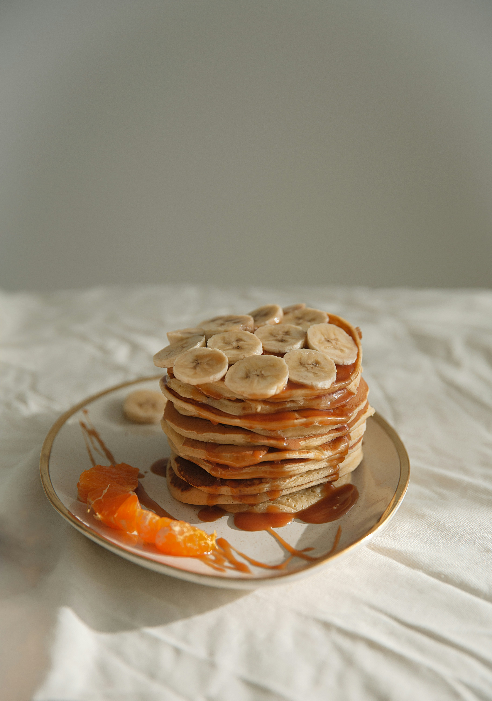
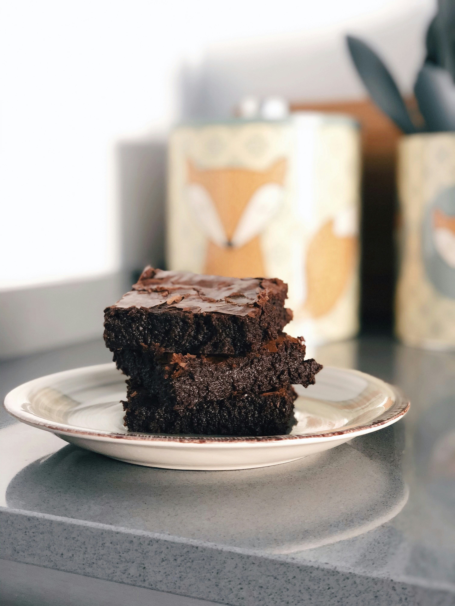

Fast CookCookbook
Save
Download
Print
Search
3-ingredient Recipes
Banana Pancakes
These fluffy pancakes are made with only three ingredients,
making for a quick and easy breakfast that's perfect for busy
mornings.

Ingredients for 4 Servings
- banana 1
- egg 2
- cinnamon 1/4 teaspoon
- maple syrup, or honey, to serve
Preparation
- In a bowl, mash the banana with a fork.
- Add eggs and cinnamon. Mix until combined.
- Heat a nonstick skillet over medium heat. Add a spoonful of
batter and cook for 3-4 minutes, then flip and cook for an
additional 3-4 minutes.
- Serve with maple syrup or honey.
- Enjoy!
Peanut Butter Cookies
Whip up these scrumptious 3-ingredient Peanut Butter Cookies in a
snap! With just peanut butter, sugar, and an egg, you'll have a
delightful treat that's perfect for satisfying your sweet tooth.

Ingredients for 25 cookies
- peanut butter 1cup
- sugar 1/2cup
- egg 1
Preparation
- Preheat oven to 350oF(180oC)
- In a large bowl, mix together the peanut butter, sugar,
and egg.
- Scoop out a spoonful of dough and roll it into a ball.
Place the cookie balls onto a nonstick baking sheet.
- For extea decoration and to make them cook more evenly,
flatten the cookie balls by pressing a fork down on top of
them, then press it down again at a 90o angle to make
a criss-cross patteren
- Bake for 8-10 minutes or untill the bottom of the
cookies are golden brown.
- Remove from baking shet and cool.
- Enjoy!
Hazelnut brownies
These 3-ingredient hazelnut brownies are the perfect way to satisfy
your sweet tooth without breaking the bank. The combination of
chocolate and hazelnut in this recipe is irresisible and makes for a
deliciously decadent dessert.

Ingredients for 8 servings
- chocolate hazelnut spread 13oz
- egg 2
- flour
Preparation
- Preheat oven to 350oF(175oC)
- In a large bowl, combine ingredients.
- Transfer mix to square baking dish.
- Bake for 15 minutes.
- Allow to cool for minutes and then carefully cut into
squares.
- Enjoy